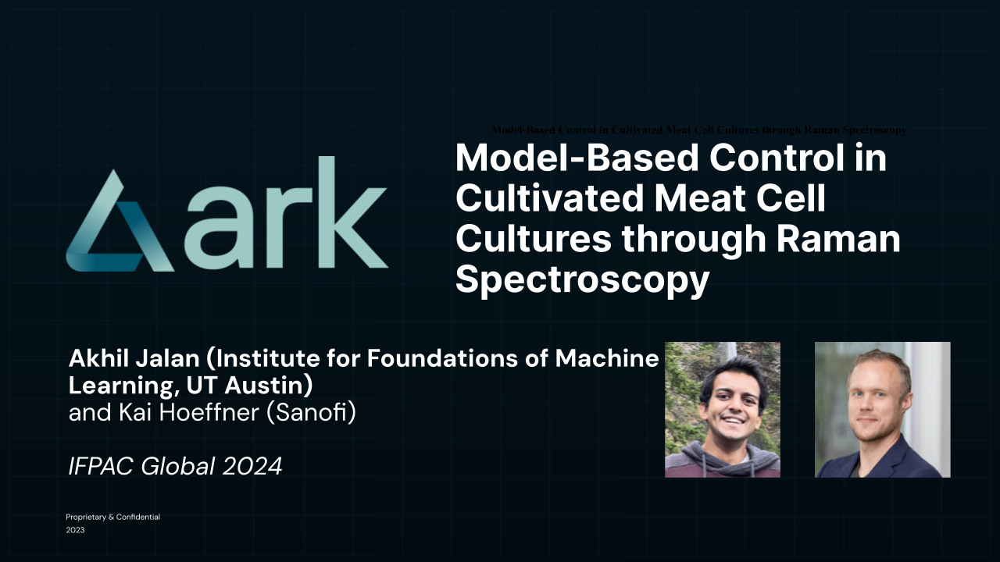

Projects
Transfer Learning for Biological Networks (NeurIPS 2024)
For most organisms, especially non-model organisms, biological network data are missing or incomplete. We develop a novel and mathematically rigorous algorithm for transferring biological network knowledge between organisms. Our algorithm is broad in nature and applicable to metabolic networks, gene co-expression networks, protein-protein interaction networks, etc. In the paper, we obtain strong results on estimating metabolic networks for non-model organisms.

Figure: Our algorithm can transfer from one species (left) to another (right). As an illustration, we visualize the shared metabolites betweenE. coli and P. putida. With full data for E. coli, we can transfer knowledge to estimate metabolic pathways of P. putida.
[Paper (To Appear in NeurIPS 2024)]Bioprocess Optimization Paper at IFPAC Global 2024
Bioprocess optimization is critical to scaling cultivated meat. In this work, we used machine learning and feedback control to perform real-time feedback control of a bioreactor cell culture with Raman spectroscopy. This work was joint with Kai Hoeffner, my former supervisor at Ark Biotech. I presented the work at IFPAC 2024, the premier global conference on process analytical technology (PAT) in bioprocessing and pharmaceuticals.
Survey Article: In Silico Alternative Proteins
I survey 8 important classes of concrete problems in alternative proteins that require expertise in the in silico scientific and engineering disciplines (applied mathematics, statistics, computer science, electrical engineering, mechanical engineering, physics).
The topics are:
- Active learning and experimental design
- Protein Engineering in silico
- Bioinformatics and multi-omics models
- Bioprocess state estimation and control
- Computational Fluid Dynamics for exploratory and digital twin modeling
- 3D Models for Adherent Cell Cultures and Scaffolds
- Models for Texturization and Extrusion
- Other Topics (Techno economic analysis, operations research, marketing and outreach)
Talk: Multi Omics Data Analysis at the CMMC

Bioinformatics is a powerful tool for cultivated meat and alternative proteins development. Multi-omics approaches integrate data from multiple distinct biological systems (e.g. genomics, transcriptomics, metabolomics) to obtain a more integrated and holistic model of the biological system at hand. In this short talk, I discuss a recent paper by Tasseff et al. (2019) on skin modeling using multi-omics datasets. The model combines differential equations and agent based models for water transport, molecular diffusion, and the cell cycle.
Next, I discuss the famous techno-economic analysis (TEA) of David Humbird on scale-up economics for cultivated meat. I argued that the limitations Humbird identified to scale-up, such as metabolic inefficiency, motivate the need for multi-omics modeling in cultivated meat. Finally, I discuss some specific examples of omics datasets that will be needed for this task, including proteomics, genomics, and metabolomics.
Short Article: A Small-Data Approach to Machine Learning in Cellular Agriculture
Mega-scale machine learning algorithms such as ChatGPT and AlphaFold are well known to the public. But these algorithms require millions of data points to train, while cellular agriculture practitioners would be lucky to have a few hundred for any particular task. Moreover, such data may come from heterogeneous sources, have missing fields, and be subject to observational noise. In this short article written for the CMMC, I argue that a different class of machine learning techniques, drawing on active learning and sequential optimization, can nevertheless have a huge impact on cellular agriculture. Indeed, they already have, and I cite several academic publications to this effect.